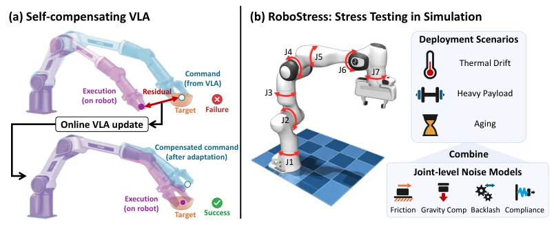
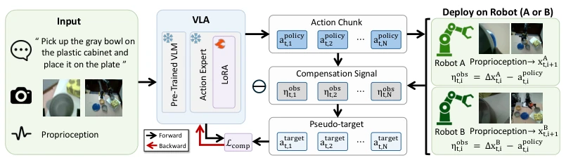
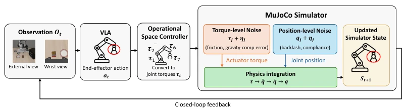
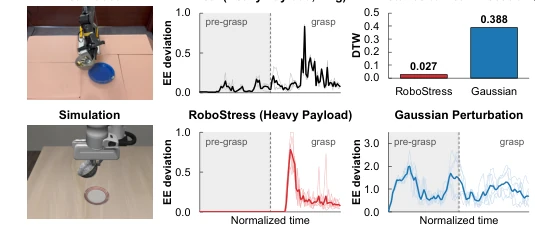
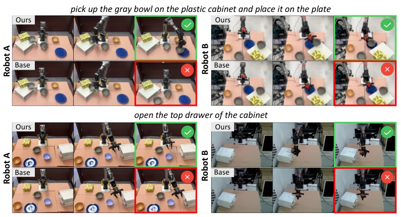
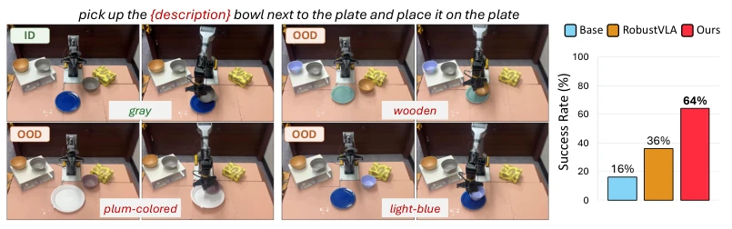

This paper finally brings the VLA issue of "ideals are full, reality is bony" to the table. The authors did not employ fancy reinforcement learning, but used proprioception residuals for online fine-tuning of LoRA, simple and brute-force yet effective. The RoboStress benchmark test is quite interesting, modeling physical noises such as friction and backlash, more reliable than simply adding Gaussian noise. However, relying on proprioception means that if sensors have drift, compensation may fail. And will LoRA online updates lead to catastrophic forgetting? The paper does not elaborate. Although physical experiments improved by 30%, they were only verified on two Piper arms, generalization to complex scenarios (such as dual-arm collaboration) remains doubtful. Overall, it is a pragmatic attempt at robustness in the deployment phase, but where the boundary of "self-compensation" lies, we must look to subsequent work.
研究动机Motivation
VLA 模型在理想仿真中表现优异，但一旦落地，机械磨损、负载变化导致的执行误差常让策略失效。现有研究多关注视觉干扰 (Fei et al., 2026; Liu et al., 2025) 或向输出注入合成噪声 (Zhang et al., 2025b; Guo et al., 2026)，忽略了物理执行层面的动态偏差。真实执行误差与机器人状态及运动历史强相关，且不同关节影响各异，现有合成扰动无法复现。此外，大规模物理测试成本高且易损坏硬件。因此，亟需一种无需任务奖励的在线适应方法，以及能模拟真实物理噪声的仿真基准，以评估并提升 VLA 在真实部署中的鲁棒性。
VLA models perform excellently in ideal simulations, but once deployed, execution errors caused by mechanical wear and load changes often cause strategies to fail. Existing research mostly focuses on visual interference (Fei et al., 2026; Liu et al., 2025) or injecting synthetic noise into outputs (Zhang et al., 2025b; Guo et al., 2026), ignoring dynamic biases at the physical execution level. Real execution errors are strongly correlated with robot state and motion history, and different joints have varying impacts, which existing synthetic disturbances cannot reproduce. In addition, large-scale physical testing is costly and prone to damaging hardware. Therefore, there is an urgent need for an online adaptation method without task rewards, and a simulation benchmark capable of simulating real physical noise, to evaluate and improve VLA robustness in real deployment.
The core is Self-compensating VLA. In terms of process, the frozen VLA generates action blocks, after the robot executes, proprioception is used to calculate the residual η_obs between command and execution. This residual serves as a pseudo-target a_target, used to update the LoRA adapter of the action expert online, without modifying base weights. The loss function adopts Flow Matching regression, and adds an anchor term to prevent parameter drift. The RoboStress benchmark integrates four joint-level noise models: Stribeck friction, gravity compensation error, backlash, and dynamic compliance. These noises are injected at different stages of the control pipeline (torque level or position level), combined into seven deployment scenarios (such as heavy load, thermal drift, aging), simulating real physical deviations. The method requires no task rewards, relies only on execution feedback, and achieves adaptive compensation during deployment.

Figure 1: Overview of our study. (a) Self-compensating VLA updates the policy online using command-execution residuals and generates subsequent commands that pre-compensate for exe- cution errors. (b) The RoboStress benchmark combines four established joint-level models into controlled deployment scenarios in simulation to stress-test VLA robustness.

Figure 2: Overview of self-compensating VLA. A frozen VLA with trainable LoRA adapters pre- dicts an action chunk, which the robot executes. The residual ηobs between the commanded and executed motion forms a pseudo-target atarget t , which the compensation objective Lcomp uses to up- date only the LoRA adapters online during deployment, leaving the base policy frozen.

Figure 3: Overview of the joint-level noise injection. The operational space controller (Khatib, 1987) converts end-effector commands into joint torques. Torque-level noise (friction, gravity- compensation error) is added to joint torques, and position-level noise (backlash, compliance) to joint positions before physics integration. The next observation is rendered from the updated state.
On the RoboStress simulation benchmark, compared π0/π0.5 baselines and training-time robust methods such as DR, RobustVLA. Results show that the method in this paper has the highest average success rate in all seven scenarios, π0.5 baseline improved from 49.1% to 56.6%. Physical experiments were conducted on two Piper robotic arms with different usage histories, tasks included grasping and opening drawers, success rate improved by over 30 percentage points. Ablation experiments indicate that both residual signals and policy updates are necessary. In addition, the method also shows generalization ability to unseen object variants (such as bowls of different colors). Compared to DOB external correction, this method still provides additional gains, proving the effectiveness of strategy layer adaptation.

Figure 4: Real-world payload execution deviations compared with RoboStress and Gaussian action noise.

Figure 5: Rollouts of self-compensating VLA (Ours) and the base policy (Base) on Tasks 2 and 4, for Robot A and Robot B. Green and red borders mark success and failure.

Figure 6: Generalization to unseen objects, evaluated on Robot A. Left: Our rollouts with the gray bowl (ID) and object variants (OOD). Right: Success rates on all OOD variants.